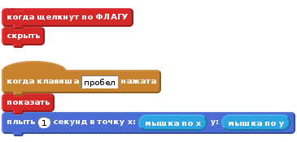
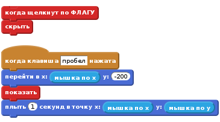
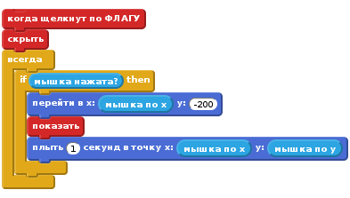
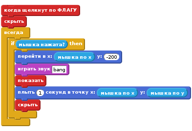
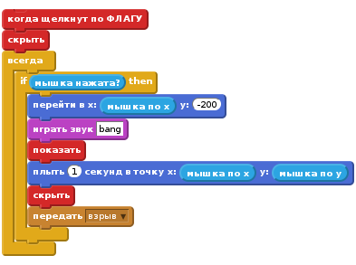
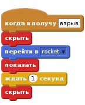
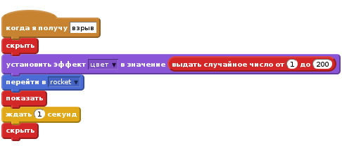
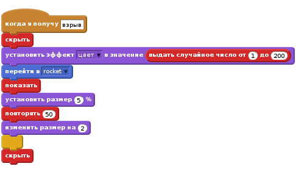
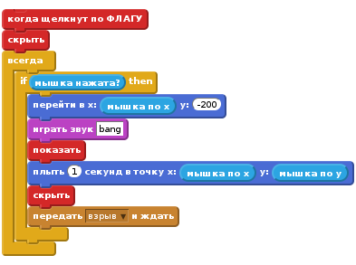

Введение
В этом проекте мы создадим фейерверк над городом

ШАГ 1: Создать ракету, которая летит в направлении мыши
Давайте импортируем разные картинки для игры
Список проверки действий
- Создайте новый проект Скретча. Удалите кота, нажав на него правой кнопкой мыши и выбрав “Удалить”
- Замените фон, выбрав на открытом воздухе/city-with-water
- Нажмите на кнопку
Загрузить спрайт из файла, чтобы добавить спрайт ракеты в проект (используйте картинку__Resources/Rocket.png__).. - Сделайте, чтобы ракета скрывалась, когда нажат зеленый флаг.
Теперь мы хотим, чтобы ракета двигалась к мышке, когда щелкнут кнопкой мышки.
- Добавьте блок “когда клавиша пробел нажата”, и под ним сделайте ракету появляющимся и летящей в сторону мыши

Проверьте свой проект
Нажмите зеленый флаг, поместите мышку над сценой и нажмите пробел.
Ракета появляется и летит в сторону мышки?
Что происходит, если вы сдвинете мышку и нажмете пробел еще раз
Список проверки действий
- Фейерверк не должен летать от края экрана до края, так что давайте убедимся, что он всегда летит в сторону мышки от низа экрана. Прежде чем мы покажем ракету, используйте блок “перейти в”, укажите передвинуться ниже нижнего края экрана, но оставаться в том же месте по горизонтали.

Проверьте свой проект
Нажмите зеленый флаг, поместите мышку над сценой и нажмите пробел.
Ракета летит в сторону мышки от низа экрана? Что происходит, если вы сдвинете мышку и нажмете пробел еще раз
Список проверки действий
- Наконец, давайте сделаем эти действия, используя кнопку мыши вместо пробела. Чтобы сделать это, мы можем обернуть наш скрипт в всегда если мышка нажата.
Затем, замените блок когда клавиша пробел нажата для блока когда флаг нажат, и последнее, но не менее важное, убедитесь, что ракета скрыта, когда всё начинается.

Проверьте свой проект
Нажмите зеленый флаг, поместите мышку над сценой и нажмите кнопку мыши. Нажмите снова на соседней точке.
Эксперементируйте
- Попробуйте сделать некоторые ракеты медленнее или быстрее, чем остальные.
- Попробуйте изменить точку, где ракета начинает движение в сторону мышки, чтобы сделать небольшой угол
Сохраните свой проект
ШАГ 2: Делаем ракету взрывающейся
Список проверки действий
- Первый шаг, чтобы сделать взрыв ракеты, это сделать ёё издающей звук взрыва Resources/bang.wav, прежде, чем она начнет двигаться, и затем скрывать себя, когда она дойдет до мышки Чтобы импортировать звук, перейдите на закладку “Звуки” и нажмите кнопку
Загрузить звук из файла

- Затем, сделайте, чтобы ракета передавала новое сообщение, когда она взрывается Мы будем отслеживать это сообщение позже

Проверьте свой проект
Нажмите зеленый флаг.
Удостоверьтесь, что ракеты издает звук и скрывается, когда она достигает мышки
Список проверки действий
- Создайте новый скрипт из файла, Resources/firework1.png
- Когда спрайт получает сообщение “взрыв”, он должен скрыть себя, и затем переместится на позицию ракеты, используя блок “перейти в”, показать себя, и затем исчезнуть секунду спустя.

Проверьте свой проект
Запустите еще одну ракету в полет.
Заменяет ли она графику взрыва, когда взрывается сама
Что случается, когда вы держите кнопку мыши нажатой и двигаете мышку? (Не волнуйтесь, мы поправим это потом).
Сохраните свой проект
Шаг 3: Сделать каждый взрыв уникальным
- Теперь мы можем сделать каждый взрыв еще более уникальным, используя блок
установить эффект, и выбрав произвольный цвет между 1 и 200, прежде чем показывать его.

Проверьте свой проект
Нажмите на зеленый флаг.
Имеет ли каждый взрыв различный цвет?
Список проверки действий
- Давайте добавим некоторое число различных видов взрывов, используя файлы Resources/firework2.png и Resources/firework3.png, и переключаясь между ними для каждой ракеты, прежде чем показывать взрыв..
Проверьте свой проект
Нажмите на зеленый флаг.
Имеет ли каждая ракета различную графику взрывов?
Список проверки действий
- Наконец, давайте сделаем взрывы, увеличивающиеся после разрыва ракеты! Вместо того, чтобы ждать секунду, установите размер спрайта в 5% прежде чем показывать его, и затем, как только он покажется, увеличивайте размер на 2 каждые 50 раз, используя блок
повторить.

Проверьте свой проект
Нажмите на зеленый флаг.
Начинает ли графика взрыва распространятся от центра ракеты и медленно растет со временем?
Эксперементируйте
- Почему бы не попробовать сделать каждый взрыв еще более уникальным, изменяя размер и скорость роста взрыва?
Сохраните свой проект
Шаг 4: Исправить баг (ошибку) в передаче сообщения
Помните, ранее мы видели ошибку (баг), когда мы держали кнопку мыши нажатой?
Это происходит, так как когда ракета передает сообщение о взрыве, она немедленно повторяет цикл и перемещает ракету к низу сцены. Это случается прежде чем взрыв переместится на позицию ракеты.
Список проверки действий
- Чтобы исправить это, мы можем заменить блок “передать” на блок “передать и ждать”. Таким образом, цикл не будет повторятся, пока взрыв не расширится до конца.

Проверьте свой проект
Нажмите зеленый флаг, удерживайте кнопку мыши нажатой и перемещайте мышку по сцене.
Появляется ли графика взрыва в нужном месте и в нужное время?
Сохраните свой проект
Отлично, вы закончили, теперь можете насладиться игрой!
Не забудьте поделиться вашей игрой с друзьями и семьей, нажав кнопку Поделиться в верхнем правом углу!